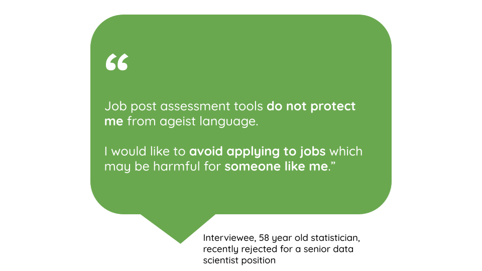
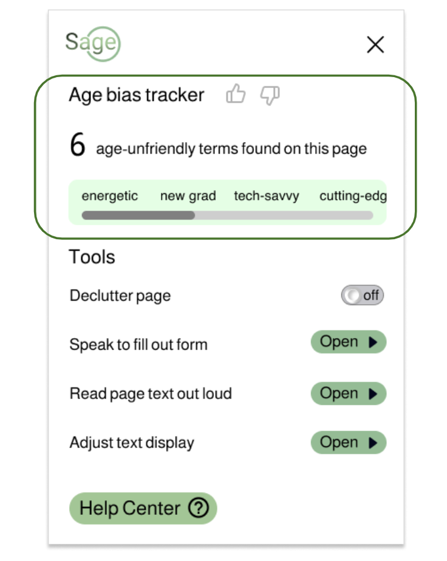
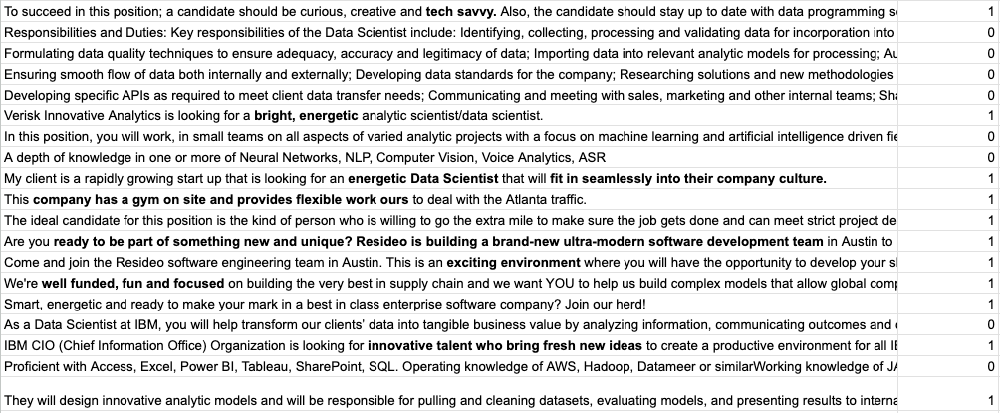
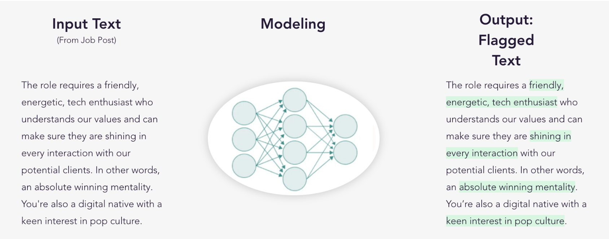
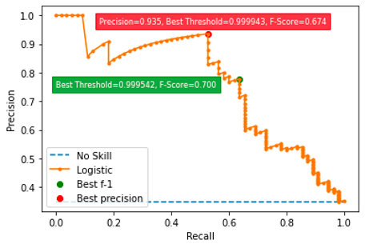
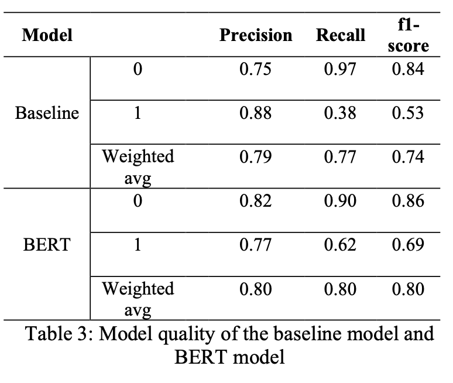
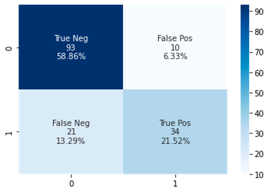

A machine learning & natural language processing browser plug-in that enables aging workers to take control of their futures.
In this project, I built a BERT-based NLP model designed to detect age-biased terms targeting older job seekers within job postings. The primary objective behind flagging ageism terms in job posts is to provide older job seekers an understanding that it is the job postings that are problematic rather than their age. This awareness can help older job seekers navigate the job market more confidently and advocate for fair treatment based on their qualifications and skills rather than arbitrary age-related biases.
Artifacts
Project Page: https://shaidhaliwal.wixsite.com/sageinnovations
Github Repo: https://github.com/Catherine0822/Capstone-Sage/tree/main
Problem
As the job market becomes increasingly digital, job websites have become a critical tool for job seekers of all ages. However, many of these websites are designed with a narrow focus on younger job seekers, ignoring the needs and preferences of older users. This lack of age inclusivity can create significant barriers for older job seekers, who may encounter ageist language and assumptions in job postings. Employers often use language that implies a preference for younger candidates or even excludes older workers entirely. This practice is not only unfair but also illegal, yet it persists on job sites across the internet.
In this project, we explored two prototypes with which we try to promote age inclusivity on job websites: (1) improving website design to better meet the needs of older users, and (2) mitigating the impact of ageist language in job descriptions, which is also where my work focused on in this project.
Sage
knowing our space
My team included two designers, a PM, a cybersecurity lead, and a data scientist (me). We worked alongside Annalee Saxenian, a professor at the Berkeley I School. She helped us with our product problem scoping and subject matter expertise, respectively. Additionally, we conducted 26 interviews and 6 usability testings in the recruiting space in order to develop our solution.

How it’s done
Our model works across different job search platforms to flag ageist language across personality, lifestyle, preferences, skills and most importantly, the age factor.
- Show the age-friendliness status of the job posting
- Calls out ageist language and the intensity of ageism
- Works concurrently with the age-friendly design features of the plugin
Digging into Model Details
-
Defining Age Discrimination in the Workforce
To build a model that detects ageist language, we have to first clearly define what agesim in the workforce is. We conducted extensive literature research and qualitative interviews to summerize the various types of ageist languages that may occur in job descriptions.
Type of discrimination Example usage Personality • You are a team player with an absolute winning mentality
• Looking for an energetic, ambitious self starter who’s not afraid to question the status quoPhysical capability • Must be willing to sit continuously for 8+ hours a day Lifestyle interests • You’re a digital native with a keen interest in pop culture Skill sets • Must be tech savvy and a digital native
• Deliver results under tight deadlines with limited oversightAge • Excellent degree from a top university with strong A- 260 levels (ideal 300+ UCAS points)
-
Data sources & Annotations
We sampled approximately 200 job ads from the Employment Scam Aegean Dataset (EMSCAD) & 10,000 data science US job postings from Data.world. With an inter annotator agreement of 0.896, we annotated over 800 lines of text from various job descriptions and requirements in these datasets to create our traning dataset. Among them, 60% of the data were used as the training set, 20% as the validation set, and the rest of 20% were used to test the model performance.
 -
Model structure
Using the human-annotated labels, I trained a classifier that consists of a BERT- based representation network, an attention layer, one hidden layer, and a softmax layer. The job descriptions are first sentence-tokenized using SpaCy, with special characters removed. The entire sentence was then loaded into BERT. The “bert-base-uncased” pre-trained BERT model was used to obtain embeddings for all sentences of job description with their contexts. The features are then passed to a Logistic regression classifier to perform binary classification.

A decision threshold is used to convert the logistics output by the model to perform binary classifications. The threshold is chosen based on the precision-recall curve below. I want to ensure a higher precision rate while not sacrificing the recall rate too much, and so a decision threshold of 0.9995 is ended up being chosen.
-
Model performance
Given that the data has highly imbalanced labels. I chose the precision, recall, and f1-score to evaluate the success of our model. The classifiers achieved an f1-score of 0.8 for overall classification, 0.86 for non-ageism sentences, and 0.69 for ageist sentences on the test set.
 
Reflections
-
Vague definitions of age discriminatory
When my colleagues and I were annotating the data, we spent a lot of time discussing if using certain personality traits that are more stereotypically describing younger people (ex. passionate, highly-motivated, creative, and innovative) discriminatory. Though it doesn’t mean that older people can’t be passionate or highly-motivated, we found out that overly using those words can infer age discrimination. However, the line between ageism or not still depends from individual to individual.
-
Limitations on data sources
Currently, the model is trained on a static dataset annotated by two students. Therefore,any possible difference in perception of discrimination by real-world users as compared to that learned by the model from the student researcher annotations would not be captured presently. In order to capture any bias introduced by third-party annotators and correct the model to capture discrimination as perceived by real-world users, the next step would be to introduce a user feedback loop, so the training of the model can be dynamic based on real user feedback and less reliant on bulk annotation by external annotators thereby reducing the bias.
-
Using other types of model
The current model in use focuses on sentence-level classification, which limits its ability to capture the broader context of entire paragraphs or job descriptions. Using models such as SBERT could potentially offer improved capability to detect implicit ageism present in job advertisements. Next, he project encountered challenges in implementing more intricate models due to the limitations imposed by restricted computational resources. With increased computational resources in the future, it would be possible to leverage more extensive datasets and employ more intricate models such as fine-tuning with a larger batch size. Additionally, employing multi-classification models instead of binary classification models may allow for the inclusion of diverse levels of ageism and, to some extent, addresses the mentioned ambiguity.
References
-
Behavioural Insights Team (Organisation). 2021. Ads for all ages: how age-biased are job adverts in the UK, and what can we do about it?
-
Böhm, S., Linnyk, O., Kohl, J., Weber, T., Teetz, I., Bandurka, K., & Kersting, M. 2020. Analysing gender bias in IT job postings: A pre-study based on samples from the German job market. In Proceedings of the 2020 on computers and people research conference, pp. 72-80.
-
Burn, I., Button, P., Corella, L.M. and Neumark, D. 2022. Does ageist language in job ads predict age discrimination in hiring? Journal of Labor Economics, 40(3), pp.613-667.
-
Cebola, M.M.J., dos Santos, N.R. and Dionísio, A., 2021. Worker-related ageism: A systematic review of empirical research. Ageing & Society, pp.1-33
-
Devlin, J., Chang, M. W., Lee, K., & Toutanova, K., 2018. Bert: Pre-training of deep bidirectional transformers for language understanding. arXiv preprint arXiv:1810.04805
-
Frissen, R., Adebayo, K.J. and Nanda, R., 2022. A machine learning approach to recognize bias and discrimination in job advertisements. AI & SOCIETY, pp.1-14.
-
Gaucher, D., Friesen, J. and Kay, A.C., 2011. Evidence that gendered wording in job advertisements exists and sustains gender inequality. Journal of personality and social psychology, 101(1), p.109.
-
Malinen, S., & Johnston, L. 2013. Workplace ageism: Discovering hidden bias. Experimental aging research, 39(4), 445-465.
-
Ojala, H., Pietilä, I., Nikander, P., 2016. Immune to ageism? Men’s perceptions of age-based discrimination in everyday contexts. Journal of Aging Studies, Volume 39, Pages 44-53, ISSN 0890-4065.
-
Somasundaran, S. & Chodorow, M., 2014. Automated measures of specific vocabulary knowledge from constructed responses (‘use these words to write a sentence based on this picture’). In Proceedings of the Ninth Workshop on Innovative Use of NLP for Building Educational Applications, pages 1–11, Baltimore, Maryland. Association for Computational Linguistics.
-
Wille, L., & Derous, E. 2018. When job ads turn you down: how requirements in job ads may stop instead of attract highly qualified women. Sex roles, 79, 464-475.
-
Wings, I., Nanda, R., & Adebayo, K. J. 2021. A context-aware approach for extracting hard and soft skills. Procedia Computer Science, 193, 163-172